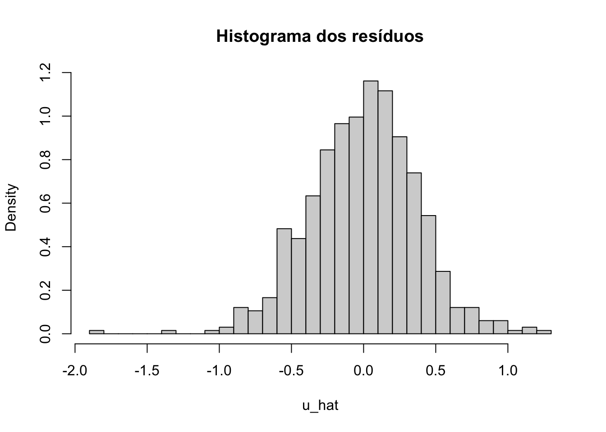

library(wooldridge)
# Carrega a base
data(wage2)
# Remove os valores ausentes (NAs)
sal <- na.omit(wage2)Uma forma instrutiva de entender o modelo de regressão linear é expressando ele em forma matricial. Os cursos introdutórios de econometria costumam omitir esta abordagem e expressam todas as derivações usando somatórios, deixando a abordagem matricial para cursos mais avançados. É bastante simples computar uma regressão usando apenas matrizes no R.
De fato, um dos objetos fundamentais do R é a e muitas das operações matriciais (decomposições, inversa, transposta, etc.) já estão implementadas em funções base. Uma var \(k\) .
Neste post vou mostrar como fazer uma regressão linear usando somente matrizes no R. Além disso, vou computar algumas estatísticas típicas (t, F)
O modelo linear é da forma
\[ y_{t} = x^\intercal_{t} \beta + e_{t} \]
onde \(x^\intercal\) é o vetor transposto de \(x\) . É importante sempre ter em mente a dimensão destes vetores. O vetor \(y_{t}\) é \(n\times1\) onde \(n\) representa o número de observações na amostra. O vetor \(\beta\) é \(k\times1\) onde \(k\) é o número de regressores (ou variáveis explicativas). Como há \(n\) observações para cada uma dos \(k\) regressores, \(x\) é \(k\times1\) ; o detalhe é que \(x = (1 \, \,x_{1} \, \dots \,x_{k-1})\) , onde cada \(x_{i}\) é \(n\times 1\) e \(1\) é um vetor de uns \(n\times1\) . Finalmente, \(e_{t}\) é \(n\times1\) . Temos então que:
\[ \begin{pmatrix} y_{1} \\ y_{2}\\ \vdots\\ y_{n} \end{pmatrix}= \begin{pmatrix} 1\\ x_{1}\\ \vdots\\ x_{k-1} \end{pmatrix}^\intercal \begin{pmatrix} \beta_{0}\\ \beta_{1}\\ \vdots\\ \beta_{k-1} \end{pmatrix}+ \begin{pmatrix} e_{1}\\ e_{2}\\ \vdots\\ e_{n} \end{pmatrix} \]
onde:
\[ \begin{bmatrix} x_{1} & = (x_{11} & x_{12} & x_{13} & \dots & x_{1n})\\ x_{2} & = (x_{21} & x_{22} & x_{23} & \dots & x_{2n})\\ x_{3} & = (x_{31} & x_{32} & x_{33} & \dots & x_{3n})\\ \vdots\\ x_{k-1} & = (x_{(k-1)1} & x_{(k-1)2} & x_{(k-1)3} & \dots & x_{(k-1)n}) \end{bmatrix} \]
Queremos encontrar o vetor \(\hat{\beta}\) que minimiza o a soma do quadrado dos erros, isto é, que minimiza
\[ S(\beta) = \sum_{t = 1}^{T}(y_{t} - x^\intercal_{t}\beta)^{2} \]
Encontramos o ponto crítico derivando a expressão acima e igualando-a a zero. O resultado é o conhecido estimador de mínimos quadrados:
\[ \hat{\beta} = \left ( \sum_{t = 1}^{T}x_{t}x_{t}^{^\intercal} \right )^{-1} \sum_{t = 1}^{T}x_{t}y_{t} \]
Para reescrever as equações acima usando matrizes usamos os seguintes fatos:
\[ \sum_{t = 1}^{T}x_{t}x_{t}^{^\intercal} = X^\intercal X \]
onde \(X\) é uma matriz \(n \times k\)
\[ \sum_{t = 1}^{T}x_{t}y_{t} = X^\intercal y \]
onde \(X^\intercal y\) é \(k \times 1\) . Lembre-se que uma hipótese do modelo linear é de que \(X\) é uma matriz de posto completo, logo \(X^\intercal X\) possui inversa e podemos escrever:
\[ \hat{\beta} = (X^\intercal X)^{-1}X^\intercal y \]
Exemplo: salário (Wooldridge)
Como exemplo vou usar um exemplo clássico de livro texto de econometria: uma regressão de salário (rendimento) contra algumas variáveis explicativas convencionais: anos de educação, sexo, anos de experiência, etc. As bases de dados do livro Introductory Econometrics estão disponíveis no pacote wooldridge. O código abaixo carrega a base de dados .
| wage | hours | IQ | KWW | educ | exper | tenure | age | married | black | south | urban | sibs | brthord | meduc | feduc | lwage | |
|---|---|---|---|---|---|---|---|---|---|---|---|---|---|---|---|---|---|
| 1 | 769 | 40 | 93 | 35 | 12 | 11 | 2 | 31 | 1 | 0 | 0 | 1 | 1 | 2 | 8 | 8 | 6.645091 |
| 3 | 825 | 40 | 108 | 46 | 14 | 11 | 9 | 33 | 1 | 0 | 0 | 1 | 1 | 2 | 14 | 14 | 6.715383 |
| 4 | 650 | 40 | 96 | 32 | 12 | 13 | 7 | 32 | 1 | 0 | 0 | 1 | 4 | 3 | 12 | 12 | 6.476973 |
| 5 | 562 | 40 | 74 | 27 | 11 | 14 | 5 | 34 | 1 | 0 | 0 | 1 | 10 | 6 | 6 | 11 | 6.331502 |
| 7 | 600 | 40 | 91 | 24 | 10 | 13 | 0 | 30 | 0 | 0 | 0 | 1 | 1 | 2 | 8 | 8 | 6.396930 |
| 9 | 1154 | 45 | 111 | 37 | 15 | 13 | 1 | 36 | 1 | 0 | 0 | 0 | 2 | 3 | 14 | 5 | 7.050990 |
| 10 | 1000 | 40 | 95 | 44 | 12 | 16 | 16 | 36 | 1 | 0 | 0 | 1 | 1 | 1 | 12 | 11 | 6.907755 |
| 11 | 930 | 43 | 132 | 44 | 18 | 8 | 13 | 38 | 1 | 0 | 0 | 0 | 1 | 1 | 13 | 14 | 6.835185 |
| 14 | 1318 | 38 | 119 | 24 | 16 | 7 | 2 | 28 | 1 | 0 | 0 | 1 | 3 | 1 | 10 | 10 | 7.183871 |
| 15 | 1792 | 40 | 118 | 47 | 16 | 9 | 9 | 34 | 1 | 0 | 0 | 1 | 1 | 1 | 12 | 12 | 7.491087 |
A base traz 663 observações de 17 variáveis. A função str é útil para entender a estrutura dos dados.
# Dimensão da base (# linhas # colunas)
dim(sal)[1] 663 17# Descrição da base
str(sal)'data.frame': 663 obs. of 17 variables:
$ wage : int 769 825 650 562 600 1154 1000 930 1318 1792 ...
$ hours : int 40 40 40 40 40 45 40 43 38 40 ...
$ IQ : int 93 108 96 74 91 111 95 132 119 118 ...
$ KWW : int 35 46 32 27 24 37 44 44 24 47 ...
$ educ : int 12 14 12 11 10 15 12 18 16 16 ...
$ exper : int 11 11 13 14 13 13 16 8 7 9 ...
$ tenure : int 2 9 7 5 0 1 16 13 2 9 ...
$ age : int 31 33 32 34 30 36 36 38 28 34 ...
$ married: int 1 1 1 1 0 1 1 1 1 1 ...
$ black : int 0 0 0 0 0 0 0 0 0 0 ...
$ south : int 0 0 0 0 0 0 0 0 0 0 ...
$ urban : int 1 1 1 1 1 0 1 0 1 1 ...
$ sibs : int 1 1 4 10 1 2 1 1 3 1 ...
$ brthord: int 2 2 3 6 2 3 1 1 1 1 ...
$ meduc : int 8 14 12 6 8 14 12 13 10 12 ...
$ feduc : int 8 14 12 11 8 5 11 14 10 12 ...
$ lwage : num 6.65 6.72 6.48 6.33 6.4 ...
- attr(*, "time.stamp")= chr "25 Jun 2011 23:03"
- attr(*, "na.action")= 'omit' Named int [1:272] 2 6 8 12 13 19 20 21 31 36 ...
..- attr(*, "names")= chr [1:272] "2" "6" "8" "12" ...O modelo proposto é o abaixo:
\[ \text{lwage}_{t} = \beta_{0} + \beta_{1}\text{educ}_{t} + \beta_{2}\text{exper}_{t} + \beta_{3}\text{exper}^{2}_{t} + \beta_{4}\text{tenure}_{t} + \beta{5}\text{married}_{t} + u_{t} \]
onde:
lwage = logaritmo natural do salário
educ = anos de educação
exper = anos de experiência (trabalhando)
tenure = anos trabalhando com o empregador atual
married = dummy (1 = casado, 0 = não-casado)
Há 6 coeficientes para estimar logo \(k = 6\) . Além disso, como há \(663\) observações temos que \(n = 663\) . A matriz de “dados” é da forma:
\[ X = \begin{bmatrix} 1 & 12 & 11 & 121 & 2 & 1\\\\ 1 & 14 & 11 & 121 & 9 & 1\\\\ 1 & 12 & 13 & 169 & 7 & 1\\\\ \vdots & \vdots & \vdots & \vdots & \vdots & \vdots \\\\ 1 & 13 & 10 & 100 & 3 & 1 \end{bmatrix}_{663\times 6} \]
O código abaixo monta a matriz \(X\) acima. As funções head e tail podem ser usadas para verificar as primeiras e últimas linhas da matriz. Vale esclarecer dois pontos sobre o código a ser usado neste post. Primeiro, quando se cria um objeto usando o operador <- pode-se forçar o R a imprimir o seu valor colocando a expressão entre parêntesis. Por exemplo, teste (x <- 3). O segundo ponto é que o operador de multiplicação matricial é %*%.
# Define alguns valores úteis:
## N = número de observações
## k = número de regressores
## const = vetor com 1^\intercals (uns)
N <- 663; k <- 6; const <- rep(1, 663)
# Monta a matriz de observações da regressão
X <- cbind(const, sal$educ, sal$exper, sal$exper^2, sal$tenure, sal$married)
X <- as.matrix(X)
# Define o nome das colunas da matriz de observações
colnames(X) <- c("const", "educ", "exper", "exper2", "tenure", "married")
# Função para verificar as primeiras linhas da matriz X
head(X) const educ exper exper2 tenure married
[1,] 1 12 11 121 2 1
[2,] 1 14 11 121 9 1
[3,] 1 12 13 169 7 1
[4,] 1 11 14 196 5 1
[5,] 1 10 13 169 0 0
[6,] 1 15 13 169 1 1# Função para verificar as últimas linhas da matriz X
tail(X) const educ exper exper2 tenure married
[658,] 1 12 9 81 2 1
[659,] 1 16 8 64 10 1
[660,] 1 12 11 121 3 1
[661,] 1 12 9 81 3 1
[662,] 1 16 10 100 9 1
[663,] 1 13 10 100 3 1Lembrando que o problema de mínimos quadrados é de encontrar os valores de \(\beta\) que minimizam a soma dos erros ao quadrado.
\[ \underset{\beta}{\text{Min }} e^\intercal e \]
Abrindo mais a expressão acima:
\[ \begin{align} e^\intercal e & = (y - X\beta )^\intercal(y - X\beta ) \\\\ & = y^\intercal y - y^\intercal X\beta - \beta ^\intercal X^\intercal y + \beta ^\intercal X^\intercal X \beta \\\\ & = y^\intercal y - 2 y^\intercal X \beta + \beta^\intercal X^\intercal X \beta \end{align} \]
Derivando em relação a \(\beta\) e igualando a zero chega-se no estimador de MQO
\[ \beta_{\text{MQO}} = (X^\intercal X)^{-1}X^\intercal y \]
O código abaixo computa \(\beta_{\text{MQO}}\) . Note que os parêntesis por fora da expressão forçam o R a imprimir o valor do objeto. Além disso, como estamos multiplicando matrizes/vetores usamos %*%.
# Define o vetor y (log do salário)
y <- sal$lwage
# Computa a estimativa para os betas
(beta <- solve(t(X) %*% X) %*% t(X) %*% y) [,1]
const 5.3563606713
educ 0.0767258959
exper 0.0104985672
exper2 0.0002881339
tenure 0.0091039254
married 0.2002468574Os valores estimados dos betas são reportados na tabela abaixo.
tabela <- as.data.frame(round(beta, 4))
colnames(tabela) <- c("Coeficiente estimado")
round(beta, 4) %>%
kable(align = "c") %>%
kable_styling(full_width = FALSE)| const | 5.3564 |
| educ | 0.0767 |
| exper | 0.0105 |
| exper2 | 0.0003 |
| tenure | 0.0091 |
| married | 0.2002 |
Resíduo e variância
O resíduo do modelo é simplesmente a diferença entre o observado \(y_{t}\) e o estimado \(\hat{y_{t}}\) . Isto é,
\[ \hat{e}_{t} = y_{t} - \hat{y}_{t} = y_{t} - x_{t}^\intercal\hat{\beta} \]
ou, de forma equivalente,
\[ \hat{e} = y - X\hat{\beta} \]
# Computa o resíduo da regressão
u_hat <- y - X %*% betaUsando o histograma pode-se visualizar a distribuição dos resíduos.
hist(u_hat, breaks = 30, freq = FALSE, main = "Histograma dos resíduos")
O estimador da variância é dado por:
\[ \hat{\sigma}^{2} = \frac{1}{N-k}\sum_{t = 1}^{N}\hat{e}_{t}^{2} \]
Substituindo os valores calculados acima chegamos em:
\[ \hat{\sigma}^{2} = \frac{\hat{e}^\intercal\hat{e}}{N-k} = 0.1403927 \]